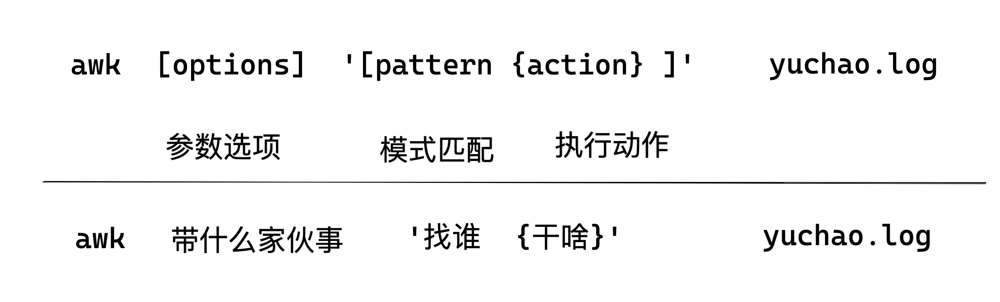
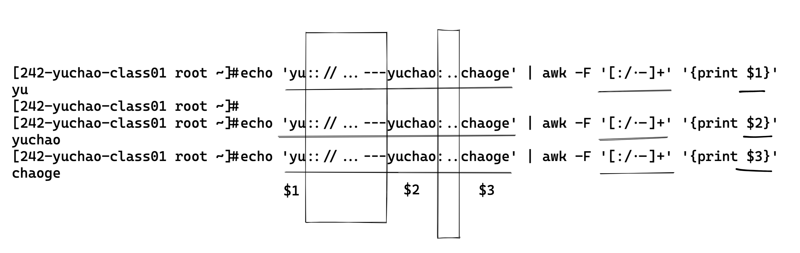
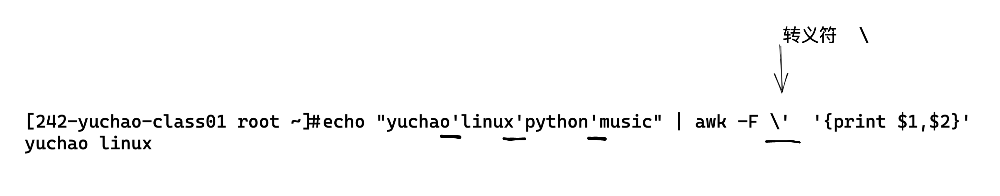
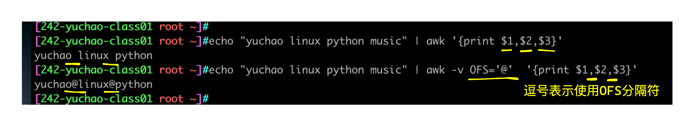
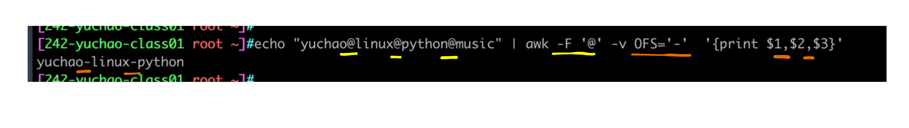
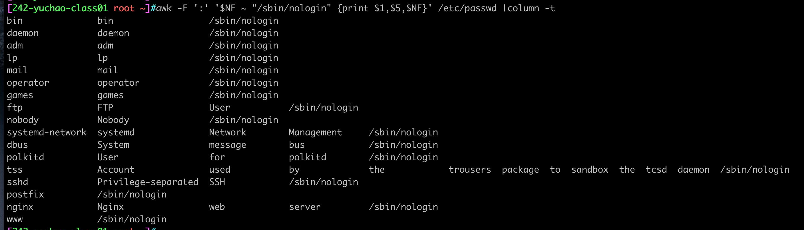

awk练习题
前言
学awk就两件事
- 如何分割数据
- 如何输出数据
语法

1.输出列
测试数据
echo yuchao linux python music
练习语法
1.输出列：
#位置变量说明
, 输出分隔符，默认逗号表示空格
$0 输出所有
$1 输出第一列
$N 输出第N列
$NF 输出最后一列
$(NF-1) 输出倒数第2列
#1.输出所有列
[242-yuchao-class01 root ~]#echo yuchao linux python music | awk '{print $0}'
yuchao linux python music
#2.只输出第一列
[242-yuchao-class01 root ~]#echo yuchao linux python music | awk '{print $1}'
yuchao
#3.输出第1和第2列
[242-yuchao-class01 root ~]#echo yuchao linux python music | awk '{print $1,$2}'
yuchao linux
#4.输出第1列到第3列
[242-yuchao-class01 root ~]#echo yuchao linux python music | awk '{print $1,$2,$3}'
yuchao linux python
#5.改变输出顺序为第3列，第2列，第1列
[242-yuchao-class01 root ~]#echo yuchao linux python music | awk '{print $3,$2,$1}'
python linux yuchao
#6.格式化打印为如下效果
姓名：yuchao 爱好：linux python music
[242-yuchao-class01 root ~]#echo yuchao linux python music | awk '{print "姓名："$1,"爱好："$2,$3,$4}'
姓名：yuchao 爱好：linux python music
#7.格式化输出所有列，以:分隔
[242-yuchao-class01 root ~]#echo yuchao linux python music | awk '{print $1":"$2":"$3":"$4}'
yuchao:linux:python:music
#8.输出最后一列
[242-yuchao-class01 root ~]#echo yuchao linux python music | awk '{print $NF}'
music
2.指定列分隔符 FS
语法格式
#语法格式:
awk -F ":"
awk -F ":/"
awk -F "[:/]"
awk -v FS='-'
awk -v FS=':'
1.FS改变默认分隔符
源数据
echo 'yuchao-linux-python-music'
写法1
[242-yuchao-class01 root ~]#echo yuchao-linux-python-music |awk -F '-' '{print $1,$2,$3,$4}'
yuchao linux python music
写法2
[242-yuchao-class01 root ~]#echo yuchao-linux-python-music |awk -v FS='-' '{print $1,$2,$3,$4}'
yuchao linux python music
源数据
echo yuchao@linux@python@music
写法1
[242-yuchao-class01 root ~]#echo yuchao@linux@python@music | awk -F '@' '{print $1,$2,$3,$4}'
yuchao linux python music
写法2
[242-yuchao-class01 root ~]#echo yuchao@linux@python@music | awk -v FS='@' '{print $1,$2,$3,$4}'
yuchao linux python music
2.输出第用户名和登录解释器（/etc/passwd）
[242-yuchao-class01 root ~]#awk -F ':' '{print $1,$NF}' /etc/passwd | column -t
3.输出用户名和该用户的注释
[242-yuchao-class01 root ~]#awk -F ':' '{print $1,"\t\t",$5}' /etc/passwd
root root
bin bin
daemon daemon
adm adm
lp lp
sync sync
shutdown shutdown
halt halt
mail mail
operator operator
games games
ftp FTP User
nobody Nobody
systemd-network systemd Network Management
dbus System message bus
polkitd User for polkitd
tss Account used by the trousers package to sandbox the tcsd daemon
sshd Privilege-separated SSH
postfix
nginx Nginx web server
4.输出倒数第二列
[242-yuchao-class01 root ~]#awk -F ':' '{print $(NF-1)}' /etc/passwd
5.切割多个符号

[242-yuchao-class01 root ~]#echo 'yu:://...---yuchao:..chaoge' | awk -F '[:/.-]+' '{print $1}'
yu
[242-yuchao-class01 root ~]#
[242-yuchao-class01 root ~]#echo 'yu:://...---yuchao:..chaoge' | awk -F '[:/.-]+' '{print $2}'
yuchao
[242-yuchao-class01 root ~]#echo 'yu:://...---yuchao:..chaoge' | awk -F '[:/.-]+' '{print $3}'
chaoge
6.特殊场景（单引号分隔符）
[242-yuchao-class01 root ~]#echo "yuchao'linux'python'music" | awk -F \' '{print $1,$2}'
yuchao linux

7.以[为分隔符
[242-yuchao-class01 root ~]#echo "yuchao[linux[python[music" | awk -F '[' '{print $1,$2,$3}'
yuchao linux python
3. 默认列分隔符OFS
也就是awk处理完毕后的结果输出，默认字段分隔符是空格
[242-yuchao-class01 root ~]#echo "yuchao linux python music" | awk '{print $1,$2,$3}'
yuchao linux python

[242-yuchao-class01 root ~]#echo "yuchao linux python music" | awk '{print $1,$2,$3}'
yuchao linux python
[242-yuchao-class01 root ~]#echo "yuchao linux python music" | awk -v OFS='@' '{print $1,$2,$3}'
yuchao@linux@python
修改字段的分隔符
[242-yuchao-class01 root ~]#echo "yuchao@linux@python@music" | awk -F '@' -v OFS='-' '{print $1,$2,$3}'
yuchao-linux-python

4.列匹配（列比较符号）
每一列数据、每一列的字段数据比较
语法
针对数字：
==
>
<
!=
>=
<=
针对字符串：
~
~!
练习
1.输出uid等于0的用户
[242-yuchao-class01 root ~]#awk -F':' '$3==0{print $0}' /etc/passwd
root:x:0:0:root:/root:/bin/bash
2.输出uid大于等于900的用户
[242-yuchao-class01 root ~]#awk -F ':' '$3>=900 {print $0 }' /etc/passwd
3.输出uid小于等于900的用户名、用户uid
[242-yuchao-class01 root ~]#awk -F ':' '$3<=900 {print $1,$3}' /etc/passwd
4.输出uid大于300或者小于50的用户名、用户id
[242-yuchao-class01 root ~]#awk -F ':' '$3 >300 || $3 < 50 {print $1,$3}' /etc/passwd
5.输出不允许登录的用户名、用户注释、用户登录解释器
方法1
[242-yuchao-class01 root ~]#awk -F ':' '$NF ~ "/sbin/nologin" {print $1,$5,$NF}' /etc/passwd |column -t
方法2
[242-yuchao-class01 root ~]#awk -F ':' '$NF !~ "/bin/bash" {print $1,$5,$NF}' /etc/passwd |column -t

4.正则匹配模式
语法
awk '/正则表达式/{print $0}'
# 1.输出root用户的用户名、uid、gid、home、login shell
[242-yuchao-class01 root ~]#awk -F ':' '/^root/{print $1,$3,$4,$6,$NF}' /etc/passwd
root 0 0 /root /bin/bash
# 2.输出yuchao01用户的用户名、uid、gid、home、login shell
[242-yuchao-class01 root ~]#awk -F ':' '/^yu/{print $1,$3,$4,$6,$NF}' /etc/passwd
yuchao01 1011 1011 /home/yuchao01 /bin/bash
5.范围匹配（NR、行比较符号）
语法说明
#格式说明
NR 行
NR== 等于行
NR>= 大于等于行
NR<= 小于等于
NR>=N&&NR<=M 从N行到M行
实践
1.打印第二行的信息
[242-yuchao-class01 root ~]#awk 'NR==2{print $0}' /etc/passwd
bin:x:1:1:bin:/bin:/sbin/nologin
2.输出第二行到结尾的所有行，带上行号
[242-yuchao-class01 root ~]#awk 'NR>=2{print NR,$0}' /etc/passwd
3.输出2到5行的内容，包括行号
[242-yuchao-class01 root ~]#awk 'NR>=2&&NR<=5{print NR,$0}' /etc/passwd
4.输出第3行、第11行的内容，包括行号
[242-yuchao-class01 root ~]#awk 'NR==3||NR==11{print NR,$0}' /etc/passwd
5.找到root用户到nobody用户的内容，包括行号
[242-yuchao-class01 root ~]#awk '/^root/,/^nobody/{print NR,$0}' /etc/passwd
6.特殊模式BEGIN和END
1.提取nobody用户名、uid、登录解释器，且添加该行首字段，格式化显示，以及添加结尾动作，awk格式化完毕
[242-yuchao-class01 root ~]#awk -F ":" 'BEGIN{print "用户名","uid","登录解释器"}/^nobody/{print $1,$3,$NF}END{print "awk格式化完毕"}' /etc/passwd |column -t
用户名 uid 登录解释器
nobody 99 /sbin/nologin
awk格式化完毕
2.用awk统计root创建了多少个普通用户
[242-yuchao-class01 root ~]#awk -F: '$3>=1000{a++;print NR,$0}END{print "自建用户数是："a}' /etc/passwd
21 www:x:1000:1000::/home/www:/sbin/nologin
22 t1:x:1001:1001::/home/t1:/bin/bash
23 t2:x:1002:1002::/home/t2:/bin/bash
24 t3:x:1003:1003::/home/t3:/bin/bash
25 t4:x:1004:1004::/home/t4:/bin/bash
26 t5:x:1005:1005::/home/t5:/bin/bash
27 t6:x:1006:1006::/home/t6:/bin/bash
28 t7:x:1007:1007::/home/t7:/bin/bash
29 t8:x:1008:1008::/home/t8:/bin/bash
30 t9:x:1009:1009::/home/t9:/bin/bash
31 t10:x:1010:1010::/home/t10:/bin/bash
32 yuchao01:x:1011:1011::/home/yuchao01:/bin/bash
自建用户数是：12
7.统计线上不重复的IP数量
1.拿到日志,2022-4-12-nginx.log ，日志测试数据从超哥要
2.提取IP数量
[242-yuchao-class01 root /opt]#awk '{print $1}' 2022-4-12-nginx.log > nginx_ip.log
3.对IP去重，统计
[242-yuchao-class01 root /opt]#cat nginx_ip.log |sort | uniq -c | sort -rn | head
22 101.89.43.238
19 111.30.182.95
16 61.241.55.230
16 61.241.55.180
14 111.30.182.61
10 101.89.45.22
5 39.185.216.12
4 183.136.225.14
4 111.18.193.57
2 223.72.62.116